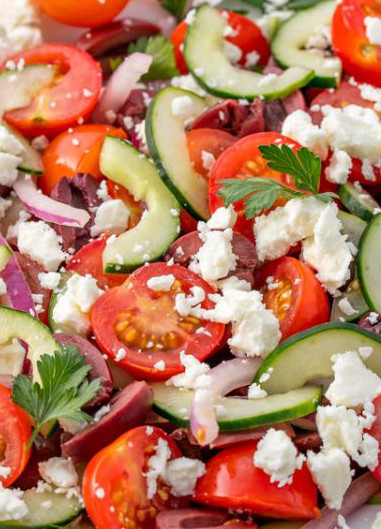

Greek Salad
Classic and tasty greek salad
YIELDS
PREP TIME
TOTAL TIME
4 SERVINGS
15 MINS
15 MINS
Ingredients
1 pt. grape or cherry tomatoes, halved
1 cucumber, thinly sliced into half moons
1 c. halved kalamata olives
1/2 red onion, thinly sliced
3/4 c. crumbled feta
2 tbsp. red wine vinegar
Kosher salt
Juice of 1/2 a lemon
1 tsp. dried oregano
Directions
In a large bowl, stir together tomatoes, cucumber, olives, and red onion. Gently fold in feta.
In a small bowl, make dressing: Combine vinegar, lemon juice, and oregano and season with salt and pepper. Slowly add olive oil, whisking to combine.
Drizzle dressing over salad.